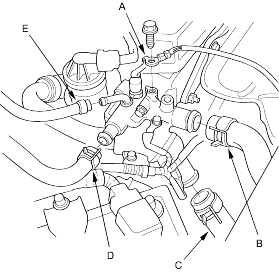
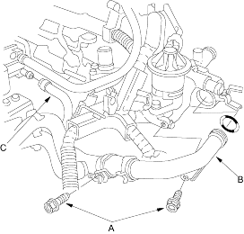
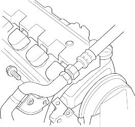

- Remove the ground cable (A), upper radiator hose (B), lower radiator hose (C), heater hose (D) and water bypass hose (E).

- Remove the two bolts securing the connecting pipe, then remove the connecting pipe (B) from the water passage.

- Remove the water bypass hose (B).
- Remove the alternator, refer to the '01 Civic Shop manual on this CD (see page 4-31).
- Remove the air conditioning (A/C) hose bracket (A) and P/S hose bracket (B).

- Remove the engine wire harness connectors and wire harness clamps from the intake manifold.
- Idle air control (IAC) valve connector
- Throttle position sensor connector
- Manifold absolute pressure (MAP) sensor connector
- Evaporative emission (EVAP) canister purge valve connector (D14Z6, D16V1 engines)
- Engine coolant temperature (ECT) sensor connector
- Radiator fan switch connector
- CKP sensor connector
- TDC sensor connector
- Exhaust gas recirculation (EGR) connector (D14Z6, D16V1 engines)
- VTEC solenoid valve connector (D16V1, D16V3 engines)
- VTEC oil pressure switch connector (D16V1 engine)
- Oil pressure sensor connector